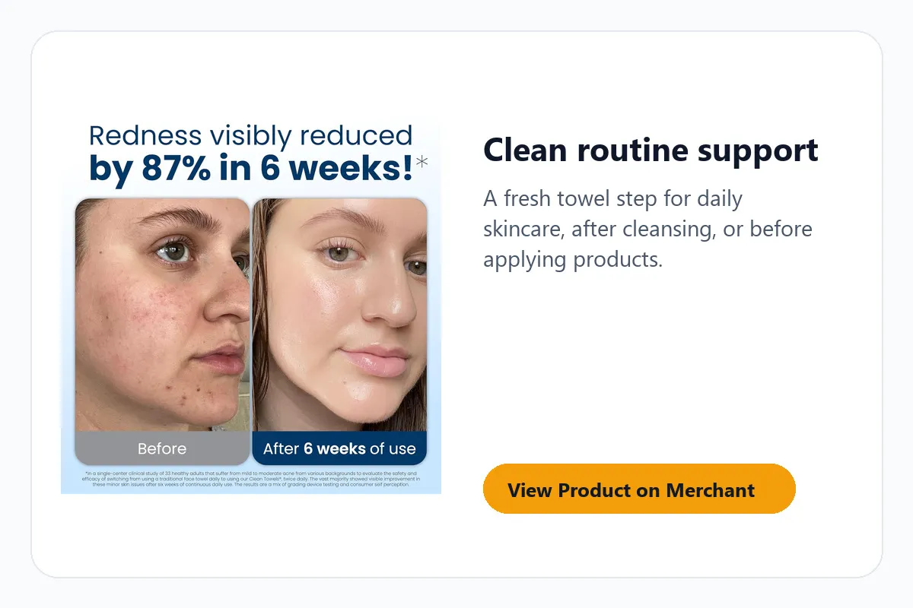
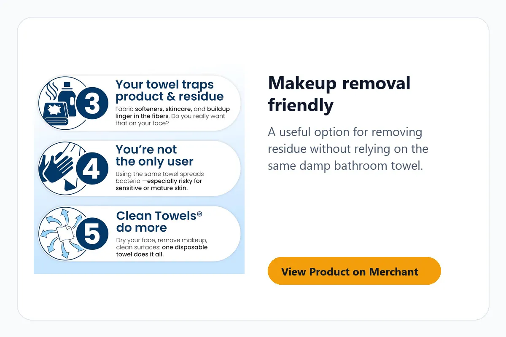
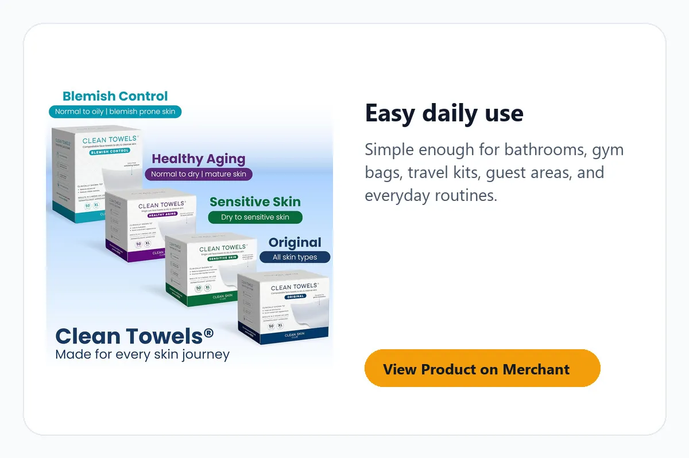

The problem: the towel step is easy to ignore
A skincare routine can be careful from cleanser to moisturizer, then end with a towel that has already been sitting in the bathroom. That final step matters because it touches freshly washed skin.
Clean Towels XL are not trying to replace your products. They solve a smaller, more practical problem: making the face-drying step feel fresh, simple, and repeatable every day.

Before and after: what actually changes?
You wash your face, reach for the same towel, and hope it is clean enough. The routine feels unfinished even when the products are good.
You use a fresh disposable face towel and remove one small question from the routine. It feels cleaner, faster, and more controlled.
Why it can be worth the shelf space
This is a practical product for people who like routines that are easy to repeat. The value is not drama. The value is removing a daily friction point.
Fresh towel feel every time
Useful if you do not want to reuse damp bathroom fabric right after cleansing.
Supports makeup removal
Pairs well with the cleanser or makeup remover you already use, especially at night.
Cleaner for travel and guests
Easy to keep in a bathroom drawer, gym bag, or overnight kit.
Simple habit upgrade
No learning curve, no device setup, no complicated routine change.

Objections worth answering before you buy
If you are happy using regular washcloths and washing them constantly, you may not need this. Clean Towels XL make more sense when you want convenience, consistency, or a fresh towel option without adding laundry.
They are also not a treatment product. They do not replace cleanser, moisturizer, sunscreen, or advice from a skincare professional. They simply make the drying and wiping step cleaner and more predictable.
How to use them without overthinking it
- Cleanse your face as usual.
- Pat dry with one clean towel instead of rubbing.
- Use another towel with makeup remover if your routine needs it.
- Throw it away after use and keep the box somewhere easy to reach.

Who should consider it, and who should skip it?
People who care about a cleaner face-drying step, wear makeup, travel often, share a bathroom, or want a simple skincare routine upgrade.
People who prefer reusable towels only, dislike disposable products, or already have a reliable system for fresh face cloths.
Bottom line: buy it if your routine needs a cleaner final step
If your skincare products are already decent, Clean Towels XL can make the last step feel more complete. It is not complicated. That is the point.
If you are tired of wondering whether your towel is working against your products, this is worth checking before your next skincare restock.
Quick questions
Is this a skincare treatment?
No. It is not a treatment product. It supports the routine by making the face-drying step cleaner and more consistent.
Can it help with makeup removal?
It can support makeup removal routines, especially when paired with the cleanser or remover a shopper already uses.
Is it useful for travel?
Yes. It is easy to pack and gives you a fresh face towel option when you do not want to rely on hotel or shared bathroom towels.